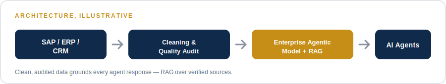
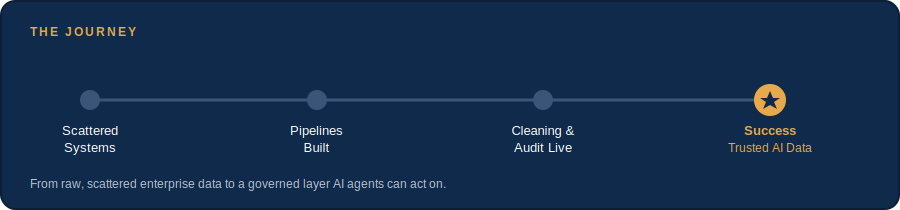

NextEmTech
Next Emerging Technology

Enterprise data lived scattered across platforms like SAP, ERP, and CRM systems — reliable for transactions, difficult to turn into something AI could act on.
Built data pipelines connecting multiple platforms and databases, with automated data cleaning and quality audit checks at every stage before anything reaches the intelligence layer. An Enterprise Agentic model and a RAG (Retrieval-Augmented Generation) layer work together on top — AI agents that reason over grounded, verified data instead of raw, unchecked feeds.
A trusted data intelligence layer connecting enterprise systems end to end — clean, audited data flowing through to AI agents built to be trusted with it. The outcome: data-driven decisions backed by real insight, forecasts leadership can rely on, and clear visibility into the financial drivers behind performance.
What started as data trapped in disconnected SAP, ERP, and CRM systems became one governed intelligence layer. Every record now passes through cleaning and quality checks before an AI agent ever sees it — so the answers it gives are grounded in verified data, not guesswork. Decisions that used to take a week of manual reconciliation now take minutes.
